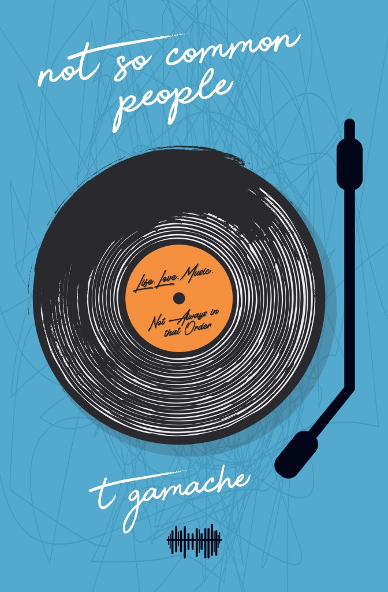

Welcome to my site!
My first novel, "Not-So-Common-People" is available now from Amazon!!
Click here to order!
Nathan Smythe is a young man with a musical addiction, a stressful family, and 2 roommates who seem to be the only people who understand him. When tragedy strikes his family he finds feelings he didn't know he had, and meets someone who could change the trajectory of his life forever. Only this is not what he had planned at all. But then again, he never really had a plan.
Nathan and his three siblings are all running into life-changing issues that has his head spinning. He is the type of fella who loves consistency and stability in his life, and at every turn he is finding out that those are the last two things he has any control over.
Armed with a playlist to try and bring reason to his world, Nathan will do what he has always done-move forward without a clue. It's worked up to this point, right?
Life.
Music.
Love.
Not necessarily in that order.
Thanks for stopping by and be sure to have a look around. Check out both my Twitter and Facebook feeds and give me a follow! Feel free to drop me line at tgamachebooks@gmail.com